Biomedical engineering new graduate focused on medical devices, embedded firmware,
PCB design, hardware validation, signal processing, and integrated hardware/software systems.
Python, MATLAB, Simulink, Stateflow, RTMaps, Flask, MongoDB, Google Cloud, signal processing, MFCCs, DTW, CAD and rapid prototyping.
Technical Projects
VocalPoint Capstone Project
Electrical Lead | Hearing-assistive Bluetooth microphone array
Altium, PCB Design, Raspberry Pi CM5, Bluetooth, DSP, I2S, Firmware
Leading electrical development and component integration for VocalPoint, a table-top microphone
array Bluetooth device designed to assist hearing-aid users in noisy environments.
Designing schematics and parts of the PCB layout in Altium for a Raspberry Pi CM5 carrier board.
Integrating USB-C power delivery, a 3V3 buck converter, multi-microphone audio sources, and PCIe connectors for high-speed communication with a HAILO-8 accelerator.
Prototyping Bluetooth audio streaming and DSP applications across hardware and microcontroller platforms.
Targeting efficient speech isolation and enhancement from a microphone array before wireless streaming to hearing aids.
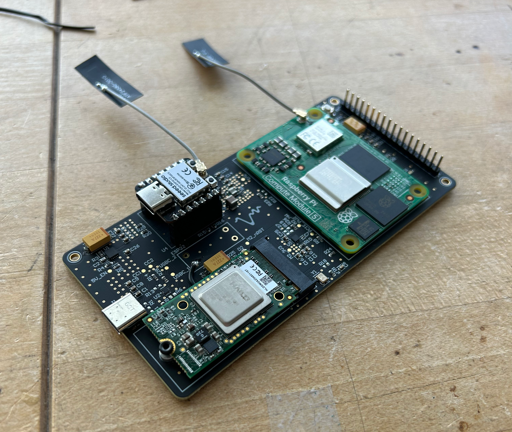
Assembled VocalPoint PCB.
PCB top view.
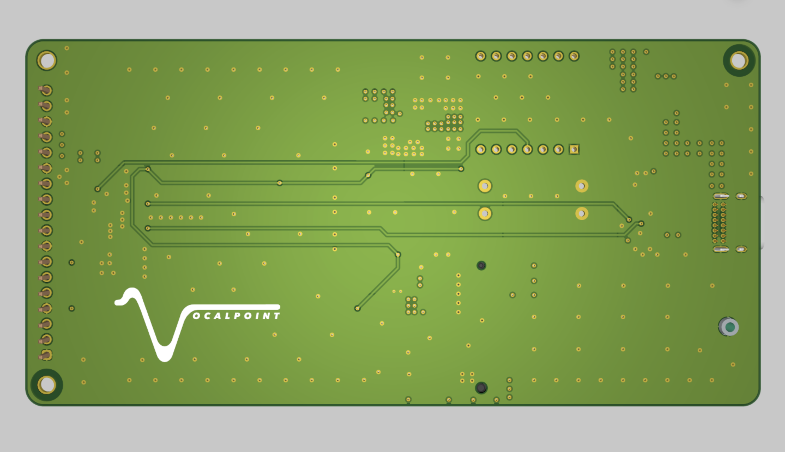
PCB layout detail.
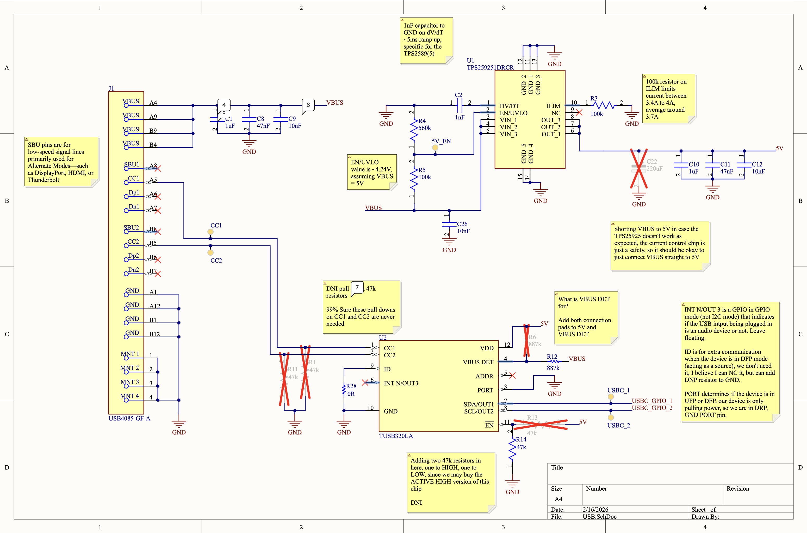
USB-C connector, PD controller IC, and TPS25925 eFuse current control.
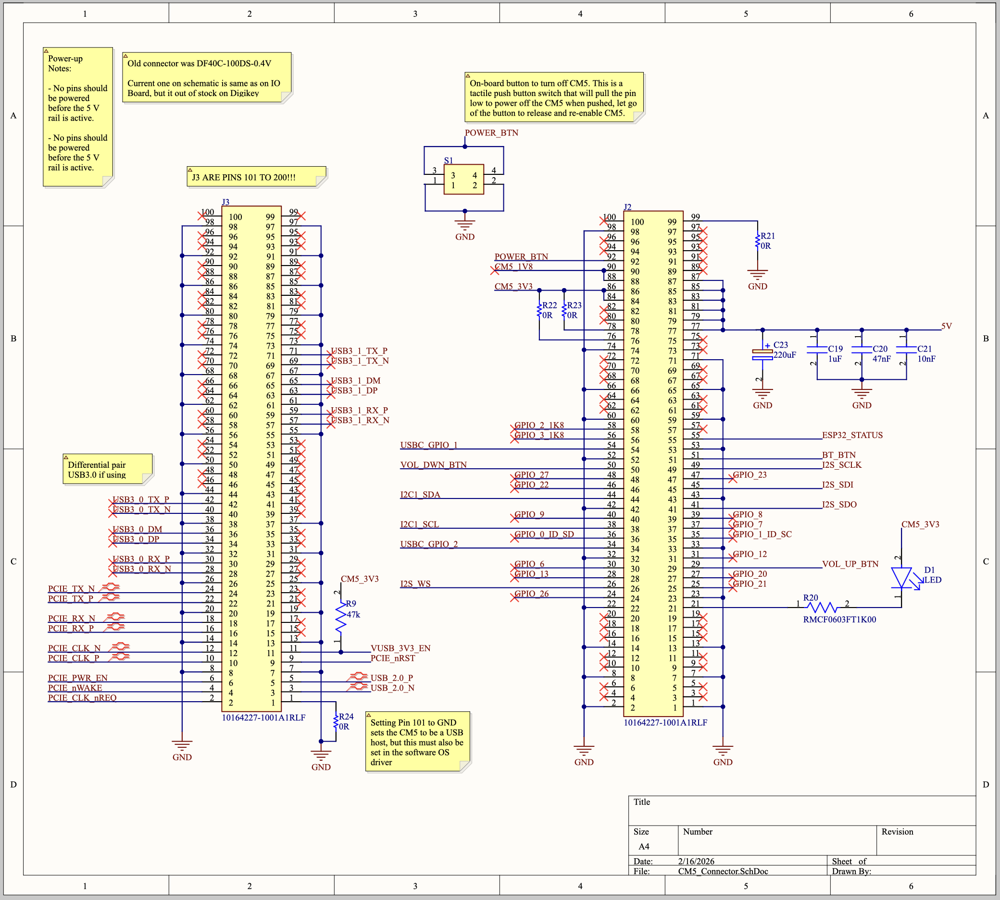
Raspberry Pi CM5 connector schematic.
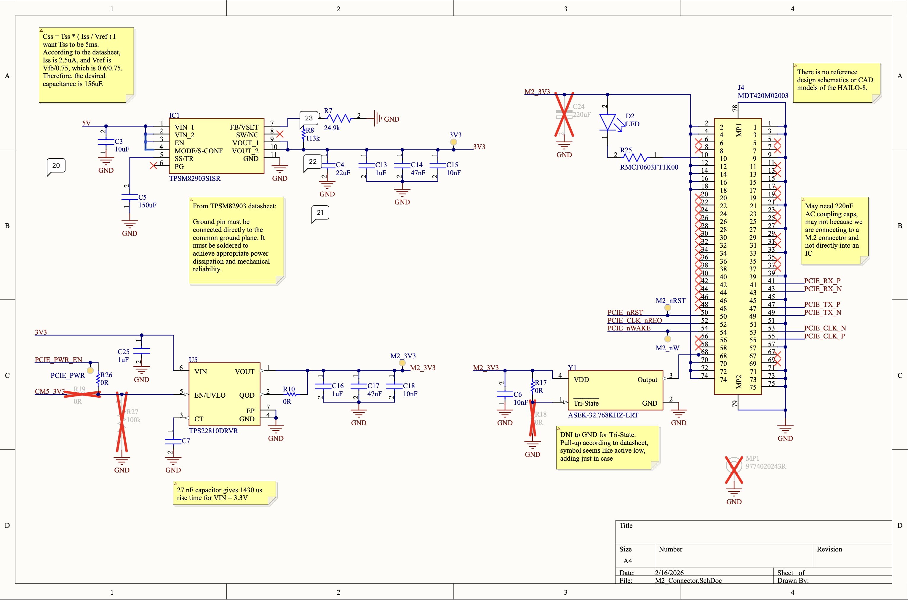
M.2 connector, 3V3 control, and HAILO-8 connection.
VAD Keyword Detector
Classical speech-processing keyword detector without AI keyword models
Python, Signal Processing, Speech Processing, MFCC, DTW
Built a keyword detection application that compares live audio against a calibrated keyword template
using signal-processing features instead of an AI classifier.
Calibration begins with a three-second ambient noise sample to estimate energy and spectral entropy thresholds.
Preprocessing removes DC offset, applies an 80 Hz to 7 kHz Butterworth bandpass filter, and adds pre-emphasis.
Keyword recordings are framed into 25 ms windows with 10 ms hops, cropped by a custom VAD, and converted into MFCC features.
Feature extraction uses a Hamming window, 512-point FFT, 40 mel filters, log mel spectrum, type-II DCT, 13 MFCC coefficients, and first/second-order deltas for 39 features per frame.
Live monitoring stores 16 kHz microphone audio in a three-second ring buffer and uses speech, hangover, and silence states to avoid choppy segmentation.
Dynamic time warping compares live segments against the template with Euclidean frame distances and a Sakoe-Chiba band constrained to about 20 percent of sequence length.
The normalized DTW score is compared against a threshold of 3.0; performance is strongest with clean calibration and consistent pitch, tone, and pacing.
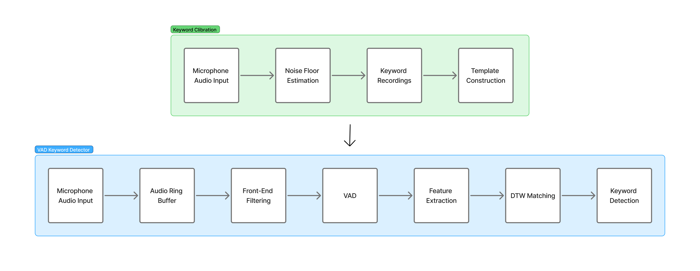
Audio pipeline block diagram.
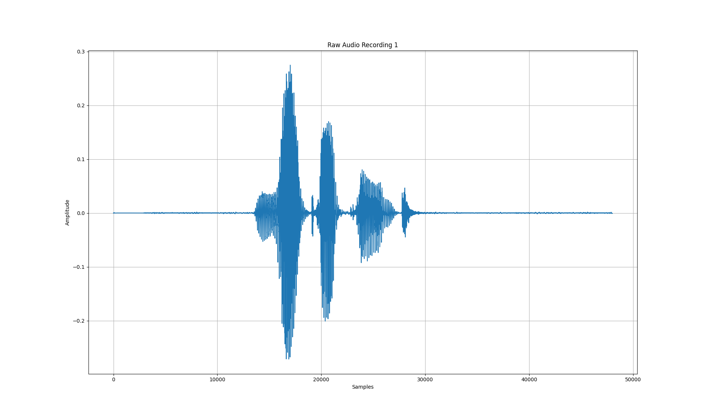
Uncropped recording of the VocalPoint keyword utterance.
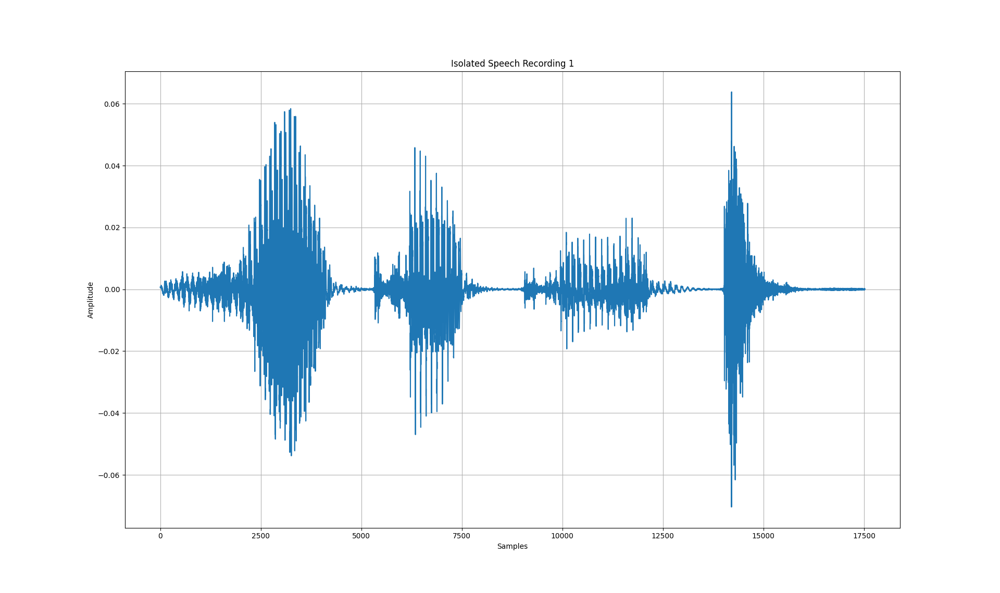
Cropped and filtered VocalPoint keyword utterance.
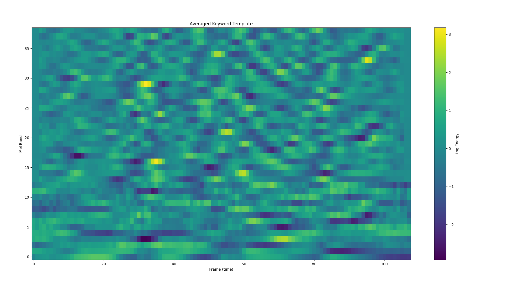
Keyword template for the VocalPoint utterance.
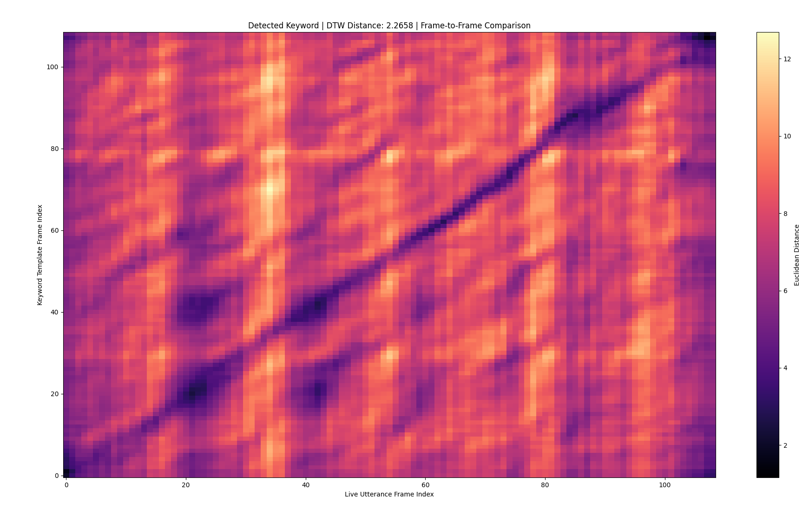
Euclidean distance frame comparison for a detected VocalPoint utterance.
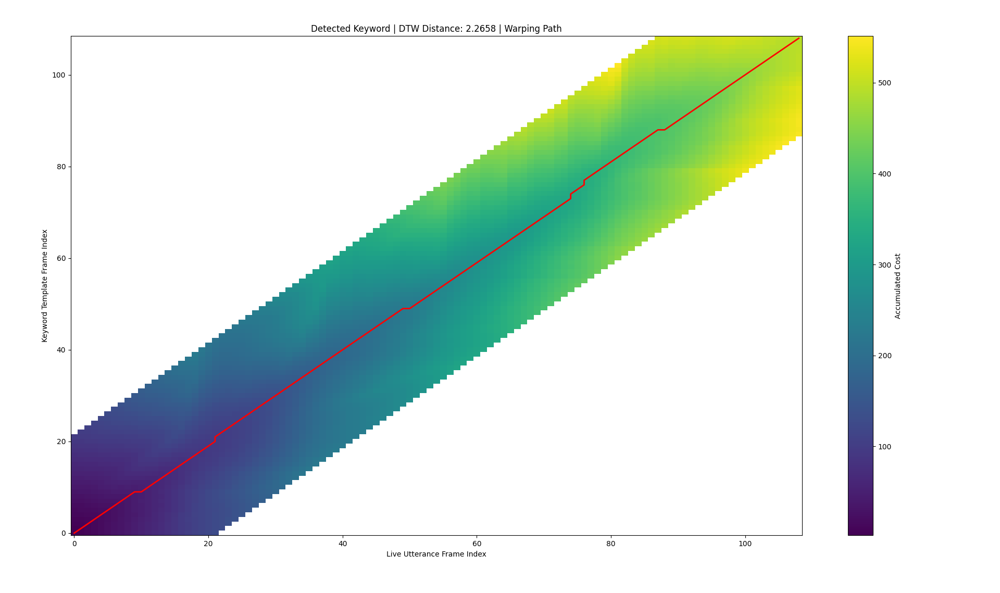
Cost matrix and warp path for a detected VocalPoint utterance.
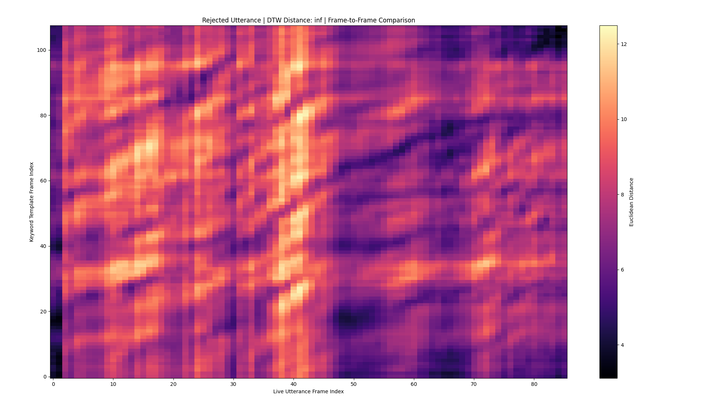
Euclidean distance frame comparison for a rejected Pizza Time utterance.
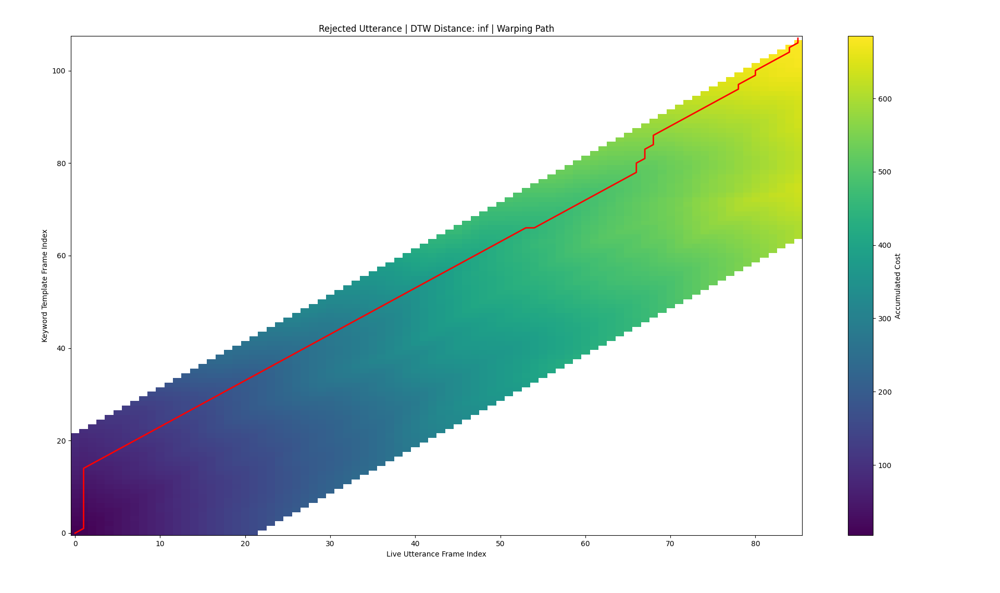
Cost matrix and warp path for a rejected Pizza Time utterance.
Cadillac LYRIQ State Machine & Feature Override
University of Waterloo Alternate Fuels Team EcoCAR control logic
MATLAB, Simulink, RTMaps, State Machine, CAN Bus, ADAS
Designed and implemented a hierarchical ADAS state machine in MATLAB/Simulink for the Cadillac LYRIQ
as part of UWAFT's EcoCAR competition.
Modeled AIN, LCC, AP, and CACC driving features as individual Stateflow state machines.
Built a parent state machine to coordinate feature priority, conflict resolution, override logic, and system-level transitions.
Converted the Simulink model into an RTMaps package for deployment on vehicle real-time middleware.
Validated behavior by replaying real CAN bus data captured from the vehicle and checking expected activation sequences.
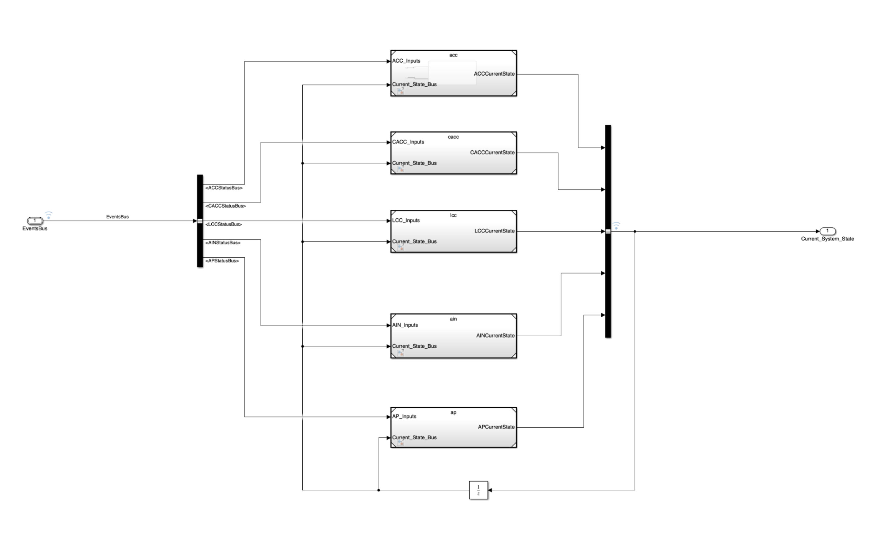
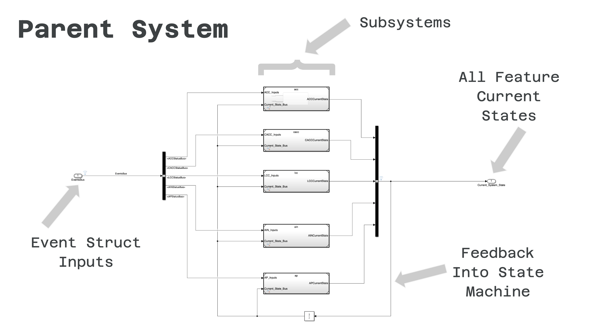
State-machine overview and parent Stateflow model for ADAS feature coordination.
Electroretinography Electrode Research
Nanoparticle ERG electrode sensor research
Research, Electroretinography, Materials, Signal Analysis, Python
Researched and developed nanoparticle-based electrodes for electroretinography diagnostics, targeting
improved accessibility, size, and customization for ERG patches.
Investigated limitations of existing clinical ERG electrode materials and synthesized Au-Ca and Au-Pt nanoparticle electrode alternatives.
Designed a specialized ERG sensor strip incorporating synthesized electrodes for early-stage diabetic retinopathy screening.
Characterized electrode performance with an oscilloscope and DMM to verify signal quality and electrical properties.
Developed a Python validation pipeline to analyze signal output against existing industry performance benchmarks.
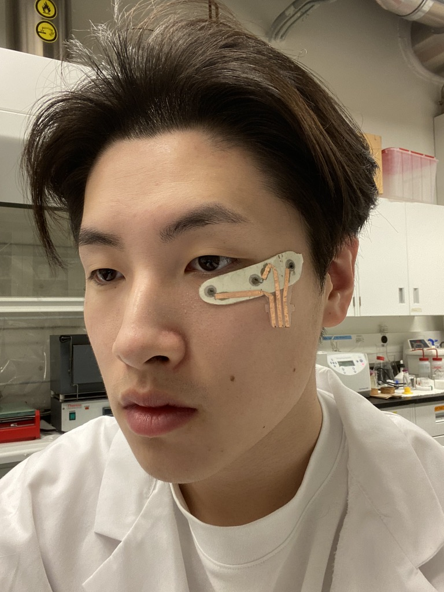
ERG sensor patch applied during in-lab testing.
EMG Hand Prosthetic
Analog EMG control interface for a 3D-printed hand prototype
Arduino, Analog Circuits, EMG Processing, SolidWorks, 3D Printing
Developed a functional hand prosthetic prototype with a partner, combining analog signal processing,
firmware, and mechanical design to create a biometric control interface.
Designed and implemented a custom analog filter circuit to process EMG signals from skin-surface electrodes on the forearm.
Filtered and amplified muscle activation signals, then passed the conditioned output into a comparator for digital flexion/extension logic.
Programmed an Arduino to interpret comparator output and control servo motors for finger actuation with threshold detection and debouncing.
Integrated electronics, motors, and mechanical linkages into a compact wearable form factor with a 3D-printed tendon-driven claw design.
MATLAB model and visualization for foot drop gait correction
MATLAB, FES, Gait Analysis
Optimized a functional electrical stimulation model in MATLAB for foot drop patients, using gait
cycle data to improve stimulation timing and evaluate rehabilitative outcomes.
Analyzed muscle activity and joint kinematic data across the gait cycle to refine stimulation parameters.
Tuned the model to better replicate healthy gait patterns by targeting appropriate muscle groups during swing phase.
Developed side-by-side MATLAB visualizations of normal gait, foot drop gait without stimulation, and FES-assisted gait.
Focused visual outputs on joint kinematics, especially ankle dorsiflexion, to show the corrective effect of FES.
Python simulation of fingertip mechanoreceptor response
Python, Mathematical Modeling, Simulation
Developed a Python-based simulation of SA-1 and FA-1 mechanoreceptors in human fingertips,
modeling how receptor arrays respond while scanning topographical surfaces.
Converted physical surface pressure over time into simulated current responses for receptor arrays.
Generated visual 3D plots and heatmaps to show receptor activation patterns over different textures.
Compared scanning outputs across image-derived surfaces and representative topographical inputs.
Input surface texture.
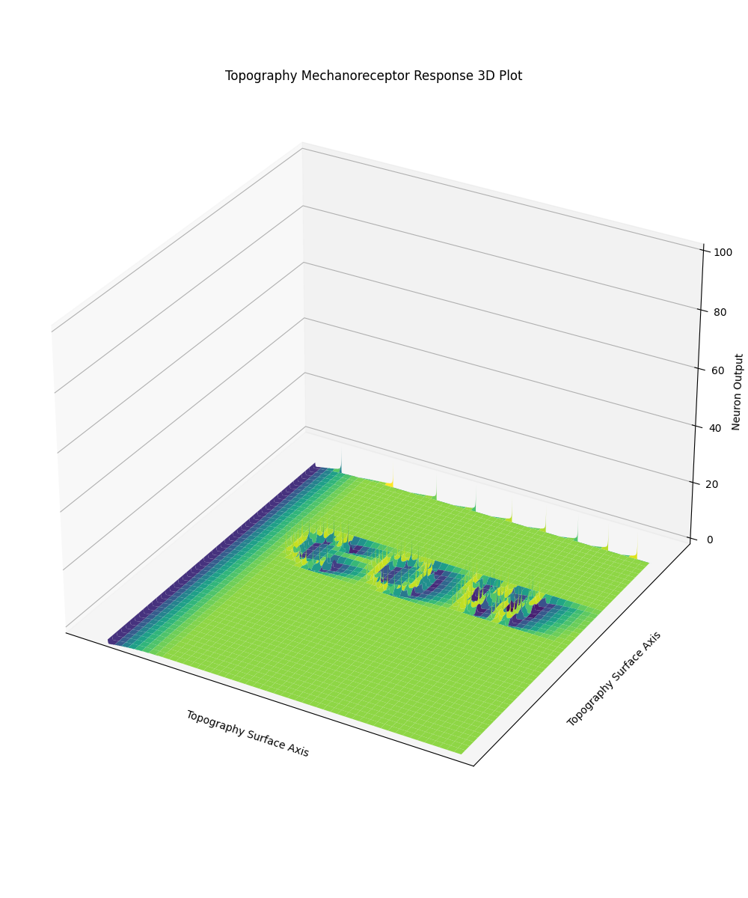
3D plot showing receptor response.
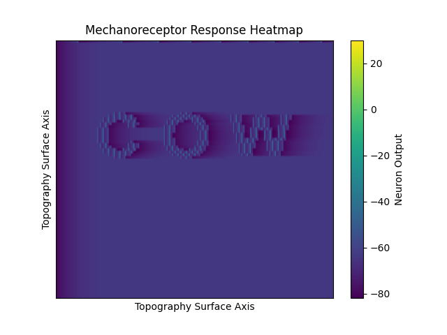
Heatmap visualization of activation patterns.
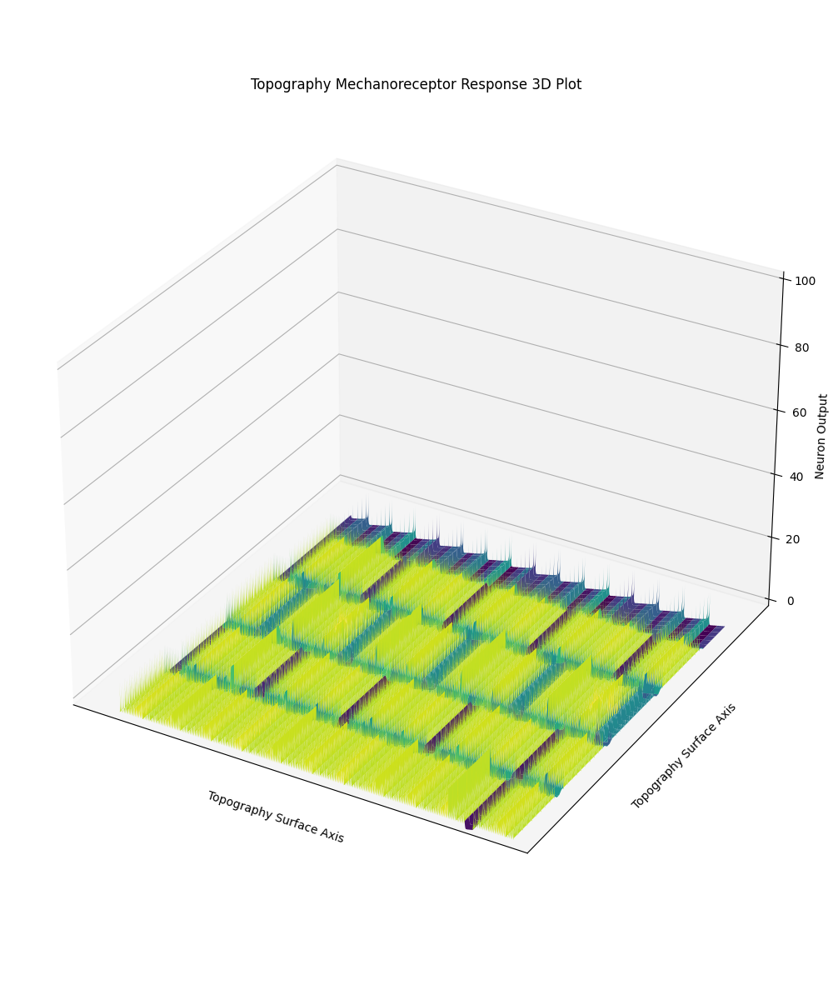
Model output scanning over keyboard topography.
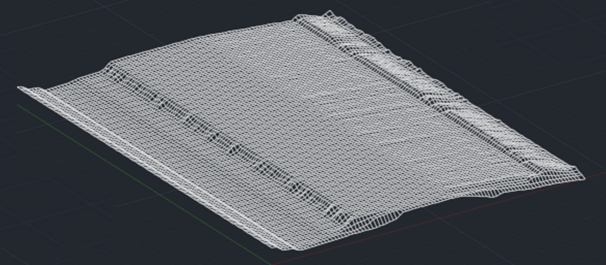
Surface texture example.
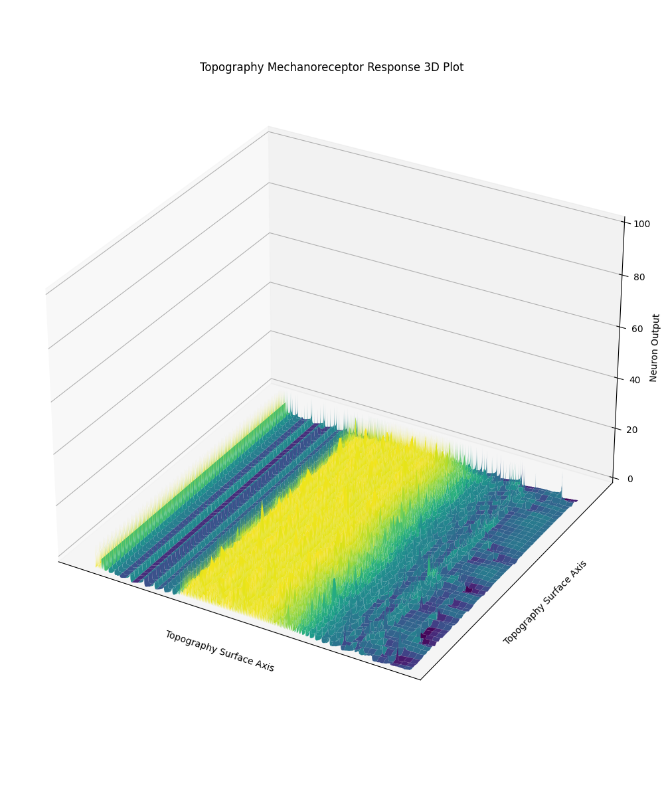
Scanning model output over the surface texture example.
Cardboard DJ Set
Portable DJ mixing system with embedded controls and local audio processing
ESP32, FreeRTOS, Raspberry Pi 5, I2C, Audio Processing, Web Development, Spotify API
Built a portable DJ mixing system with a team of three, using cardboard mechanical components,
embedded hardware controls, and real-time audio processing.
Implemented ESP32 firmware on FreeRTOS to manage buttons, rotary encoders, potentiometers, and responsive hardware interrupts.
Used I2C to transmit control signals from the ESP32 to a Raspberry Pi 5 audio processing engine.
Applied real-time audio effects including mixing, EQ adjustment, crossfading, and tempo modulation.
Output processed audio to Bluetooth devices, enabling portable operation without requiring Wi-Fi.
Built a web application and backend API for Spotify authentication, playlist browsing, track download, and local file management on the Raspberry Pi.
Finished cardboard DJ controller and ESP32/Raspberry Pi hardware integration.
CAD & Design Work
3D modeling, enclosure design, manufacturing drawings, and rapid prototyping
SolidWorks, Onshape, 3D Printing, FEA Analysis, Manufacturing
Developed 3D modeling and engineering design experience through SolidWorks and Onshape projects,
including device housings, FEA analysis, aerodynamic modeling, and design for 3D printing and manufacturing.
Created multi-part assemblies with exploded views, engineering drawings, dimensions, and tolerances.
Continued CAD work professionally through prototype device housing and sports-device aerodynamic design.
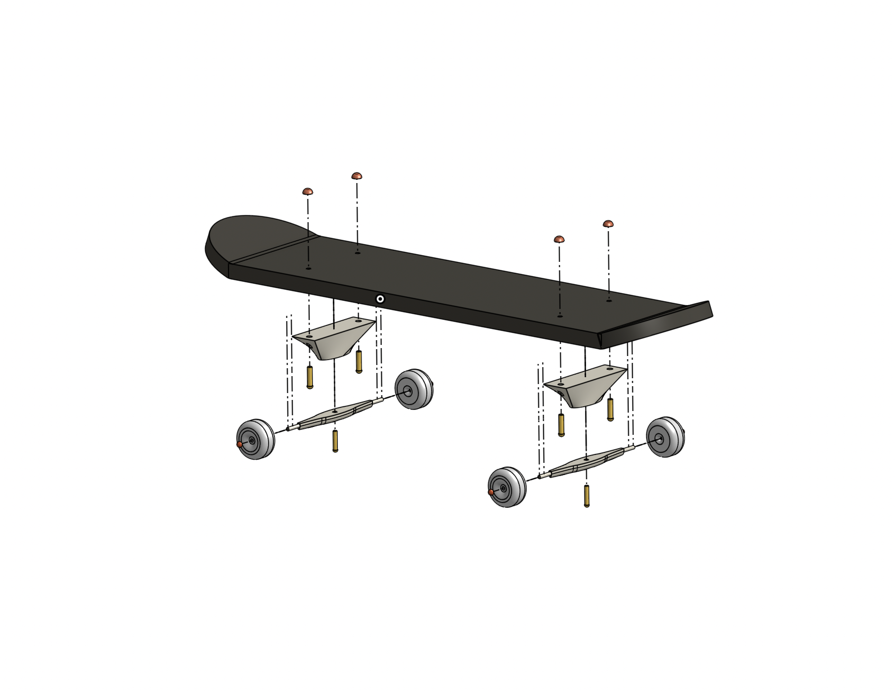
Skateboard assembly exploded view.
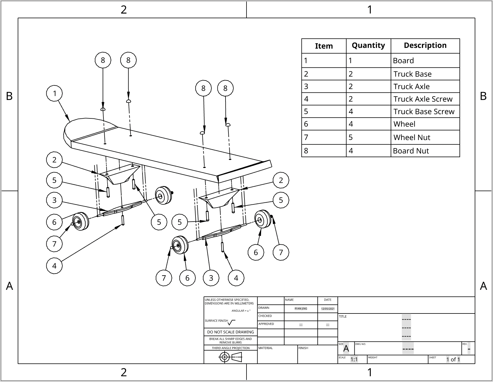
Skateboard technical engineering drawing.
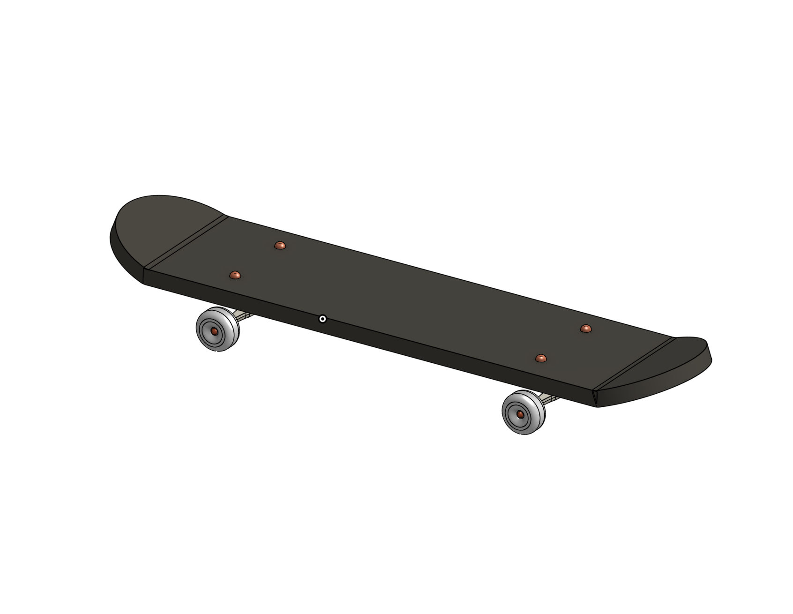
Skateboard final assembly render.
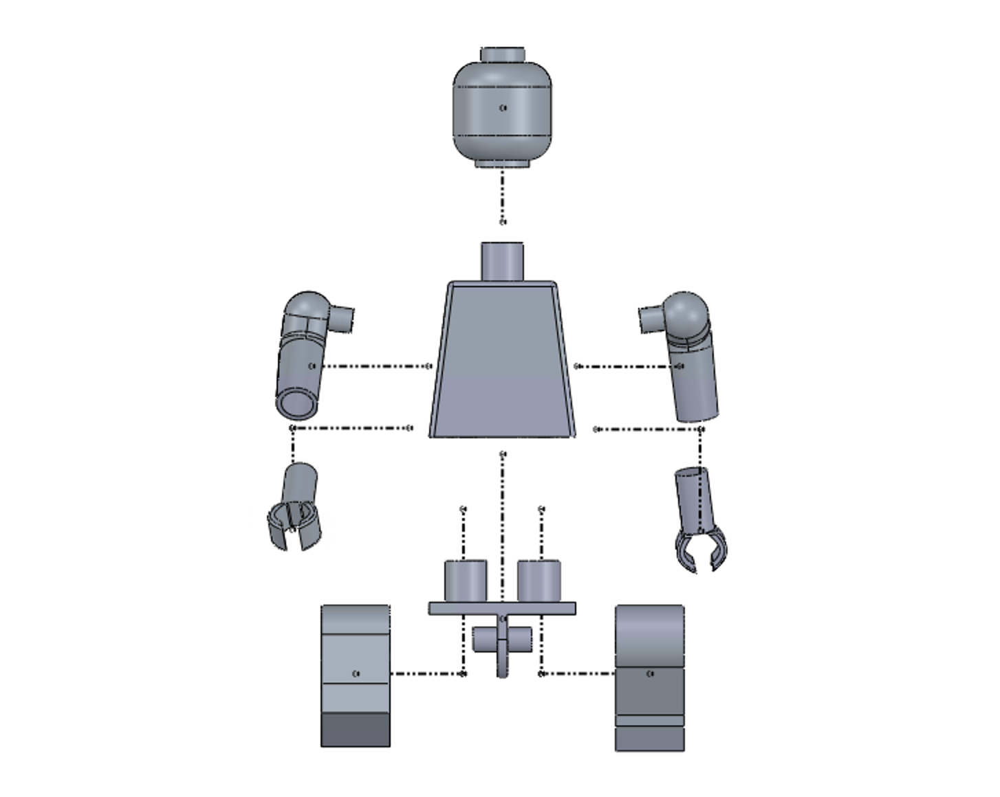
LEGO-inspired mechanism exploded assembly view.
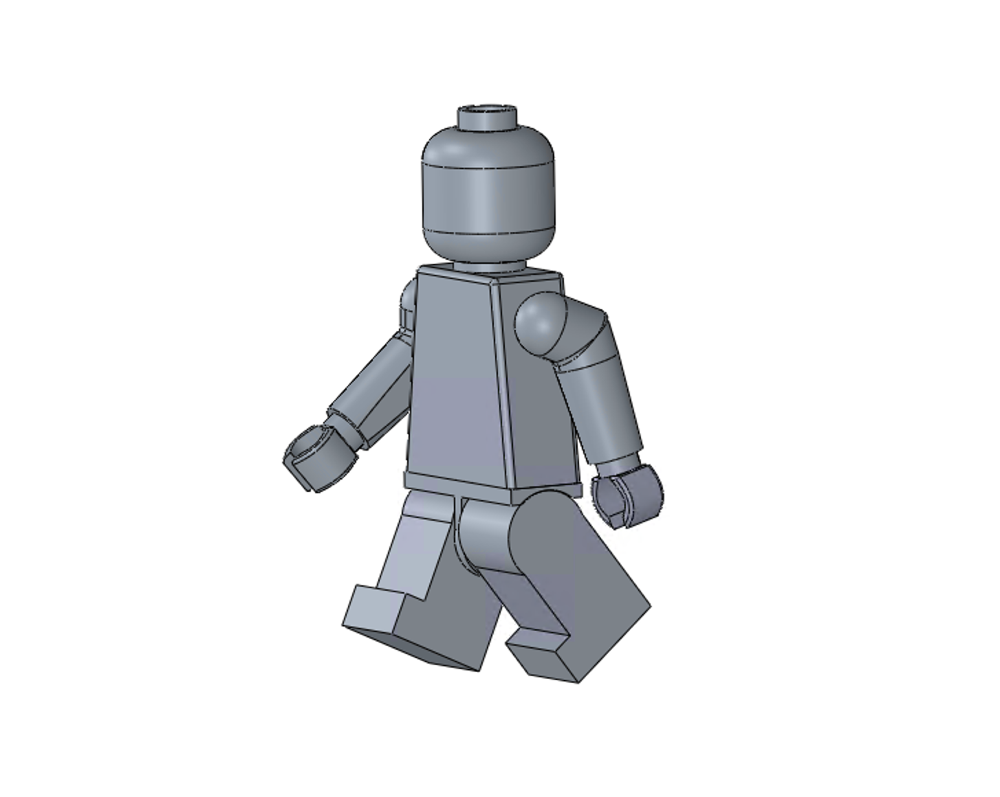
LEGO-inspired mechanism assembled render.
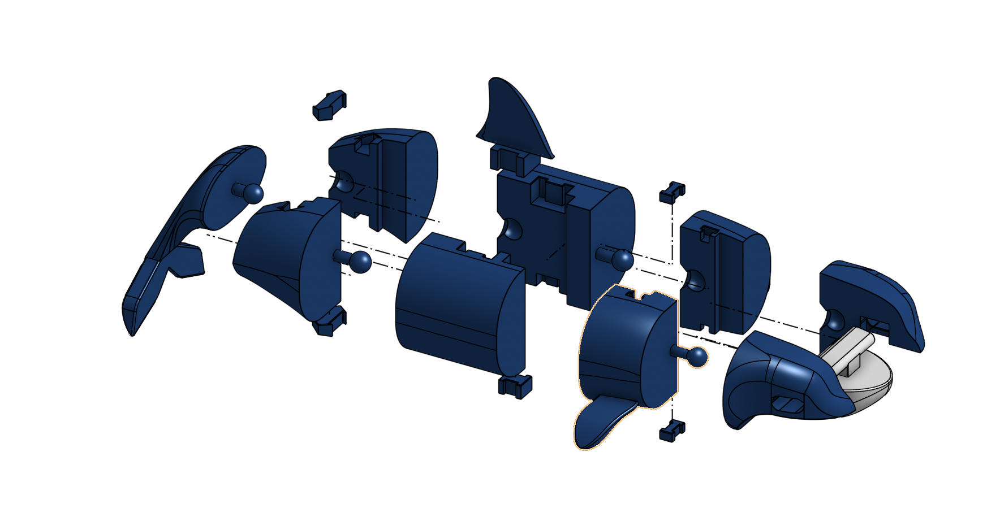
Orca housing component breakdown and assembly sequence.
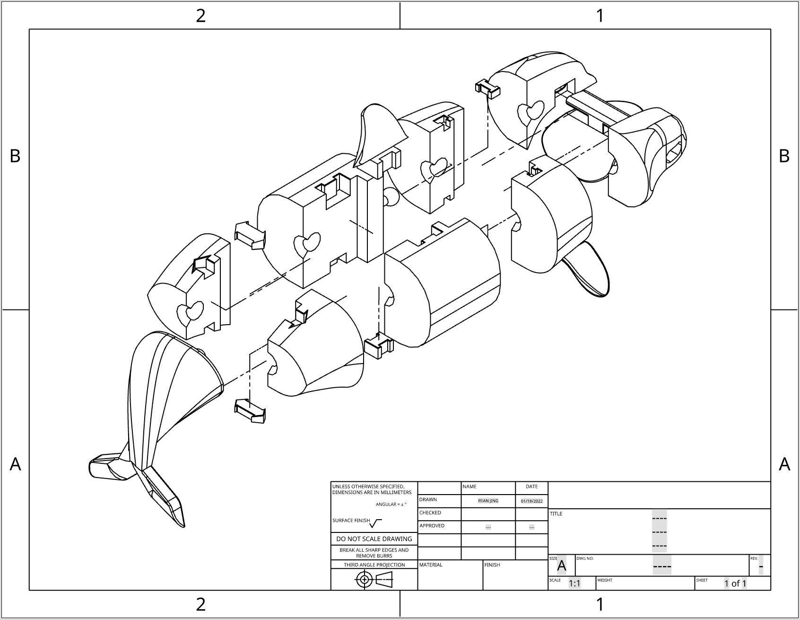
Orca enclosure manufacturing drawing.
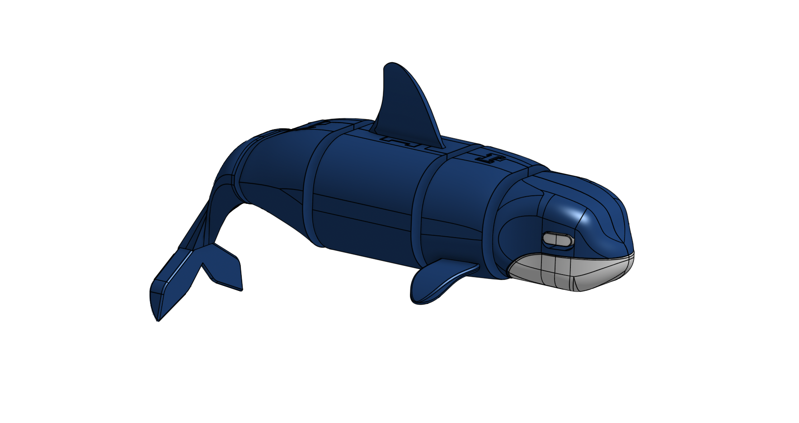
Orca device housing final visualization.
Building a Deck in My Backyard
Hands-on fabrication and outdoor structural construction
Woodworking, Construction, Power Tools, Hand Tools, Fabrication
Built a backyard deck from planning and measurement through final construction, gaining hands-on
experience with wood cutting, joinery, outdoor structural work, and tool use.
Used hand saws, a table saw, circular saws, drills, and fastening tools for precision cuts and assembly.
Worked with pressure-treated lumber and reinforced the importance of structural integrity in outdoor construction.
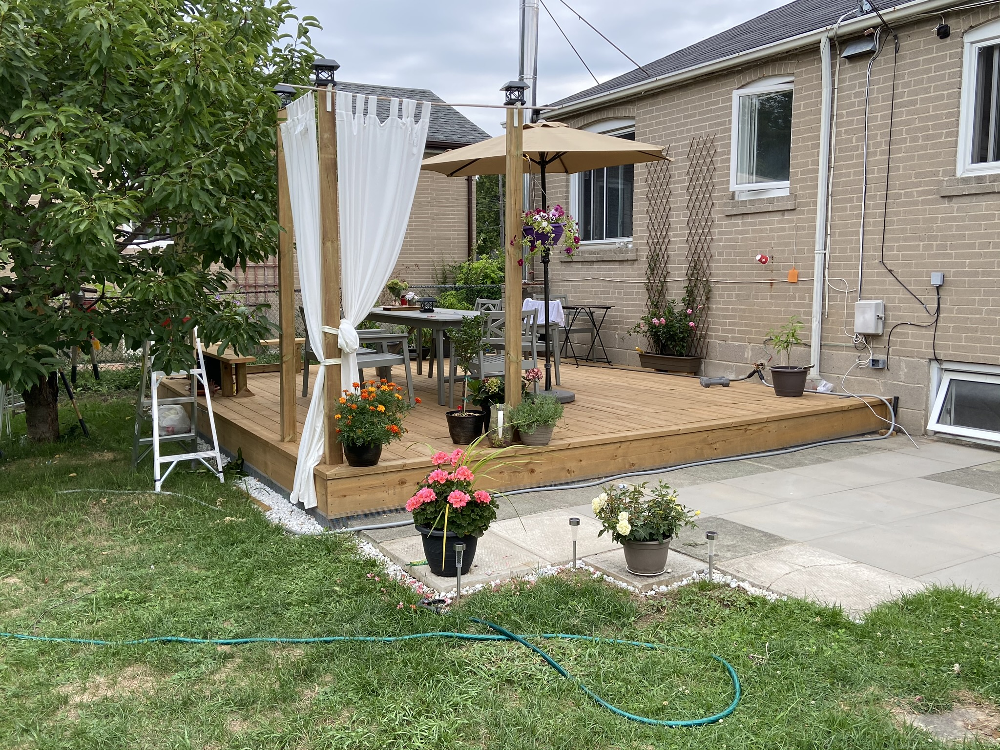
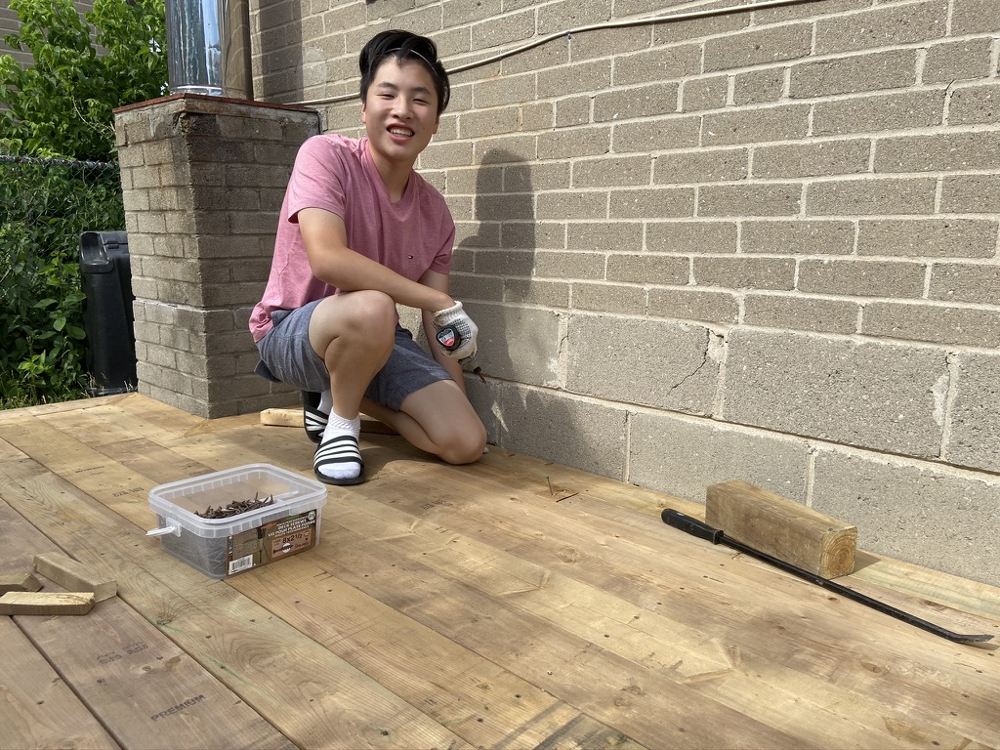
Completed deck and construction work.
Experience
Electrical Engineer
OtO | Toronto, ON
Jan - Aug 2025
Designed electrical schematics and PCBs in Altium; designed PCB bring-up testing suite for hardware debugging and validation.
Built prototype PCBs using OpenPNP; validated performance using oscilloscopes, spectral analyzers, logic analyzers, and DMMs.
Reduced device sleep current by 34%, boosted charging speed by 47%, and implemented new battery-failure operation features.
Developed ESP32 firmware features for temperature-controlled charging, I2C motor controllers, new IC integrations, and bug fixes.
Implemented CI workflows with hardware emulation, unit tests, and static code analysis for improved firmware robustness.